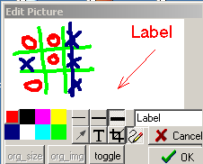
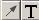
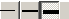
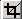
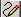
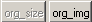

December 2004
Image Editor
PuntHoofd, Image Editor
The following actions can be performed on images, without loosing the orginal image

Image Editor
The most common actions with pictures (in documentation) are adding highlights, by arrows and labels. Therefor, by default, just clicking on the image, will toggle between inserting labels and arrows. Newly added labels add arrows can be moved around freely.
Normal steps for labels and arrows
 these buttons determine what you will be drawing
Correcting the position, text
If necessary, you can adjust the label and or arrow, by click and drag.
Both new added labels and arrows are objects, which can ly over each other, and you can only reach the topmost (last added) object.Each arrow occupies a rectangle, which can be made visible by the toggle button.
By clicking on an existing label, the label will be selected (strike through text), and the text can be corrected in the label field.
After leaving the image editor window, the objects are merged with the image, and thus cann't be moved anymore. But you can always restore the orginal image back.
Selecting color and size
click on color to set the color for drawing,
when objects are selected (label=strikethrough, arrow has borders), the color of the selected objects will change. You can deselect an object by a RightMouse click on an object.
 click to set the penwidth + fontsize for drawing
when objects are selected (label=strikethrough, arrow has borders), the width of the selected objects will change. You can deselect an object by a RightMouse click on an object.
Crop the image
 select this button,
click in the image the upper-left corner of the wanted selection,
drag to the lower-right corner of the wanted selection,
releave the mousebutton and the image will be cropped.
Freehand drawing
 when this button is down, freehand drawing is active in the selected color, with the selected penwidth. You can whipe out a part of the drawing by selecting the color white. (this might change in the future, because I'm thinking whether transparency should occure in a free drawing.
Mixing freehand drawing with object drawing ....
Getting the orginal image back
